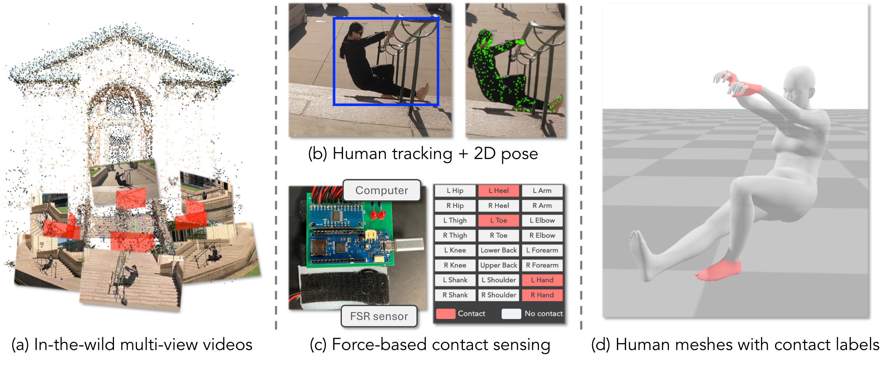
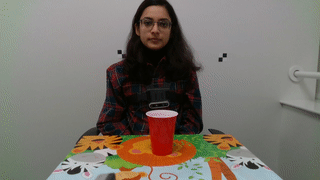

|
Jyun-Ting Song
Research Interests
|
|
My research focuses on advancing human-centric AI. I am currently interested in:
•Multi-view capture systems for in-the-wild human reconstruction under interaction scenarios
•Physically plausible human mesh recovery and optimization
•Physics-based humanoid control with contact-aware estimation
|
News
|
|
• [2025/12]I passed my MSR thesis defense at Carnegie Mellon University on the thesis title "Multi View 4D Human Reconstruction under Interaction Scenarios''.
• [2025/11]SAM3D Body was released as a part of SAM3D together with SAM3. I was part of the SAM3D Body team and contributed to the model development and model training.
• [2025/11]Contact4D and BodyContact4D were accepted to 3DV 2026.
• [2025/06]I attended CVPR 2025 in Nashville, United States.
• [2025/06]I started a new position as a Research Scientist Intern at Meta FAIR, working on a promptable human mesh recovery model.
• [2024/12]I attended NeurIPS 2024 in Vancouver, Canada.
• [2024/09]Harmony4D was accepted to NeurIPS 2024, Dataset and Benchmark Track.
• [2024/01]I started a new position as a Graduate Research Assistant at the Robotics Institute, Carnegie Mellon University.
• [2023/09]I started my MSR journey at Carnegie Mellon University.
Show older news
|
Affiliation
|
M.S. in Robotics
Robotics Institute
Advisor: Kris Kitani
Sept 2023 ~ Present

Research Scientist Intern, FAIR
PI: Xitong Yang
June 2025 ~ Sept 2025
|
Publications
|

|
SAM 3D Body: Robust Full-Body Human Mesh Recovery
SAM3D Body Team at Meta
Technical Report, 2025
A promptable 3D human mesh recovery model.
|

|
Contact4D: A Video Dataset for Whole-body Human Motion and Finger Contact in Dexterous Operations
Jyun-Ting Song, Jungeun Kim, Jinkun Cao, Yu Lei, Takuma Yagi, Kris Kitani
3D Vision (3DV), 2026
A large-scale whole-body human dataset for dexterous operations with finger contact annotations.
|
|

|
BodyContact4D: A Multi-view Video Dataset for Understanding Human and Environment Interactions
Soyong Shin, Chaeeun Lee, Holly Chen, Jyun-Ting Song, Eni Halilaj, Kris Kitani
3D Vision (3DV), 2026
A large-scale human dataset for body part contact estimation.
abstract |
project |
dataset |
bibtex
@inproceedings{shin2026bodycontact4d,
title = {BodyContact4D: A Multi-view Video Dataset for Understanding Human and Environment Interactions},
author = {Shin, Soyong and Lee, Chaeeun and Chen, Holly and Song, Jyun-Ting and Halilaj, Eni and Kitani, Kris},
booktitle = {3D Vision (3DV)},
year = {2026}
}
|

|
Harmony4D: A Video Dataset for In-The-Wild Close Human Interactions
Rawal Khirodkar*, Jyun-Ting Song*, Jinkun Cao, Zhengyi Luo, Kris Kitani
Neural Information Processing Systems (NeurIPS), 2024
A large-scale multi-human dataset for close human interactions captured in in-the-wild environments.
paper |
abstract |
project |
dataset |
bibtex
Understanding how humans interact with each other is key to building realistic multi-human virtual reality systems.
This area remains relatively unexplored due to the lack of large-scale datasets. Recent datasets focusing on this
issue mainly consist of activities captured entirely in controlled indoor environments with choreographed actions,
significantly affecting their diversity. To address this, we introduce Harmony4D, a multi-view video dataset for
human-human interaction featuring in-the-wild activities such as wrestling, dancing, MMA, and more. We use a flexible
multi-view capture system to record these dynamic activities and provide annotations for human detection, tracking,
2D/3D pose estimation, and mesh recovery for closely interacting subjects. We propose a novel markerless algorithm
to track 3D human poses in severe occlusion and close interaction to obtain our annotations with minimal manual
intervention. Harmony4D consists of 1.66 million images and 3.32 million human instances from more than 20
synchronized cameras with 208 video sequences spanning diverse environments and 24 unique subjects. We rigorously
evaluate existing stateof-the-art methods for mesh recovery and highlight their significant limitations in modeling
close interaction scenarios. Additionally, we fine-tune a pre-trained HMR2.0 model on Harmony4D and demonstrate an
improved performance of 54.8% PVE in scenes with severe occlusion and contact.
@inproceedings{khirodkar2024harmony4d,
title = {Harmony4D: A Video Dataset for In-The-Wild Close Human Interactions},
author = {Khirodkar, Rawal and Song, Jyun-Ting and Cao, Jinkun and Luo, Zhengyi and Kitani, Kris},
booktitle = {Advances in Neural Information Processing Systems (NeurIPS)},
year = {2024}
}
|

|
Reinforcement Learning and Action Space Shaping for a Humanoid Agent in a Highly Dynamic Environment
Jyun-Ting Song, Guilherme Christmann, Jaesik Jeong, Jacky Baltes
Springer's Studies in Computational Intelligence, 2023
Reinforcement learning framework for training a humanoid agent to balance on a dynamic board via contact-rich control.
paper |
abstract |
project |
bibtex
Reinforcement Learning (RL) is a powerful tool and has been increasingly used in continuous control tasks such
as locomotion and balancing in robotics. In this paper, we tackle a balancing task in a highly dynamic environment,
using a humanoid agent and a balancing board. This task requires continuous actuation in order for the agent to
stay in a balanced state. We developed an implementation using a state-of-theart RL algorithm and simulator that
can achieve successful balancing in under 40 minutes of real-time with a single GPU. We sought to examine the impact
of action space shaping in sample efficiency and designed 6 distinct control modes. Our constrained parallel control
modes outperform a naive baseline in both sample efficiency and variance to the starting seed. The best performing
control mode (PLS-R) is around 33% more sample efficient than the second-best, requiring 70 million fewer training
timesteps to reach comparable performance.
@incollection{song2023reinforcement,
title = {Reinforcement Learning and Action Space Shaping for a Humanoid Agent in a Highly Dynamic Environment},
author = {Song, Jyun-Ting and Christmann, Guilherme and Jeong, Jaesik and Baltes, Jacky},
booktitle = {Software Engineering, Artificial Intelligence, Networking and Parallel/Distributed Computing 2022-Winter},
pages = {29--42},
year = {2023},
publisher = {Springer}
}
|
|

|
The CORSMAL benchmark for the prediction of the properties of containers
Alessio Xompero, et al.
IEEE Access, 2022
Benchmark for estimating container properties such as mass, type, and fill level from multimodal audio-visual data.
paper |
abstract |
project |
bibtex |
The contactless estimation of the weight of a container and the amount of its content manipulated by a person are
key pre-requisites for safe human-to-robot handovers. However, opaqueness and transparencies of the container and
the content, and variability of materials, shapes, and sizes, make this estimation difficult. In this paper,
we present a range of methods and an open framework to benchmark acoustic and visual perception for the estimation
of the capacity of a container, and the type, mass, and amount of its content. The framework includes a dataset,
specific tasks and performance measures. We conduct an in-depth comparative analysis of methods that used this
framework and audio-only or vision-only baselines designed from related works. Based on this analysis, we can conclude
that audio-only and audio-visual classifiers are suitable for the estimation of the type and amount of the content
using different types of convolutional neural networks, combined with either recurrent neural networks or a majority
voting strategy, whereas computer vision methods are suitable to determine the capacity of the container using
regression and geometric approaches. Classifying the content type and level using only audio achieves a weighted average
F1-score up to 81% and 97%, respectively. Estimating the container capacity with vision-only approaches and estimating
the filling mass with audio-visual multi-stage approaches reach up to 65% weighted average capacity and mass scores.
These results show that there is still room for improvement on the design of new methods. These new methods can be ranked
and compared on the individual leaderboards provided by our open framework.
@article{xompero2022corsmal,
title = {The CORSMAL benchmark for the prediction of the properties of containers},
author = {Xompero, Alessio and Donaher, Santiago and Iashin, Vladimir and Palermo, Francesca and Solak, G{\"o}khan and Coppola, Claudio and Ishikawa, Reina and Nagao, Yuichi and Hachiuma, Ryo and Liu, Qi and others},
journal = {IEEE Access},
volume = {10},
pages = {41388--41402},
year = {2022},
publisher = {IEEE}
}
|
|
{kind=link}